Academic Position
Expertise

Janna Vrijsen
Co-lead REMAC
Professor, RUMC/Donders
Cognitive bias and depression
janna.vrijsen@radboudumc.nl
Co-lead REMAC
Professor, RUMC/Donders
Cognitive bias and depression
janna.vrijsen@radboudumc.nl


Renee Roosen
Co-organizer REMAC
PhD student, RUMC/Donders
Exercise and mental health
renee.roosen@radboudumc.nl
Co-organizer REMAC
PhD student, RUMC/Donders
Exercise and mental health
renee.roosen@radboudumc.nl

Zeynep Koyuncu
Co-organizer REMAC
PhD Student, Radboud University
Dynamics of fatigue
zeynep.koyuncu@ru.nl
Co-organizer REMAC
PhD Student, Radboud University
Dynamics of fatigue
zeynep.koyuncu@ru.nl
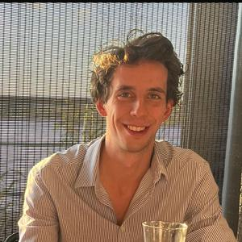
Loes Pouwels
Assistant Professor, BSI
Adolescents, social relations and social media
loes.pouwels@ru.nl
Assistant Professor, BSI
Adolescents, social relations and social media
loes.pouwels@ru.nl
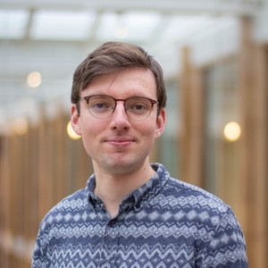
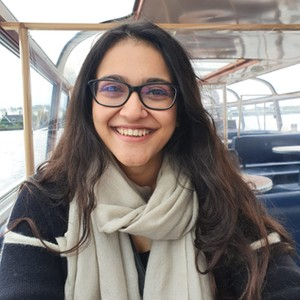
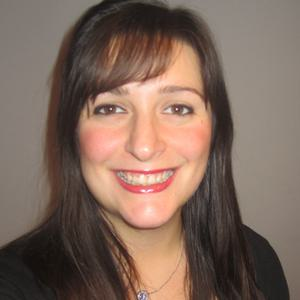
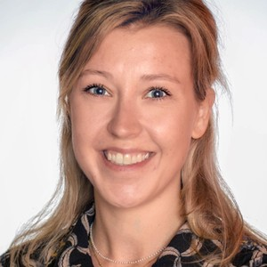
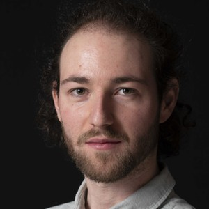
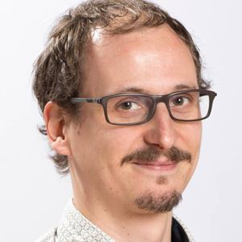
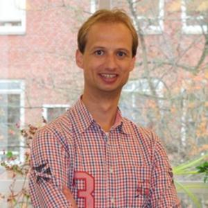
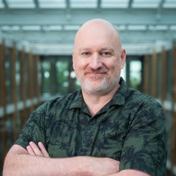
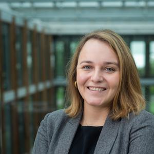
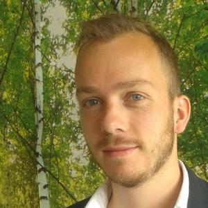
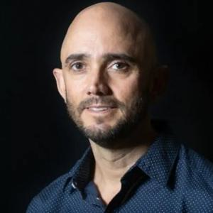
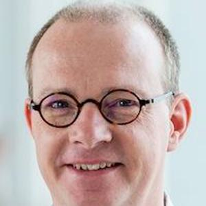
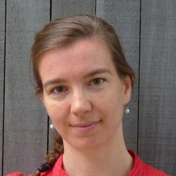
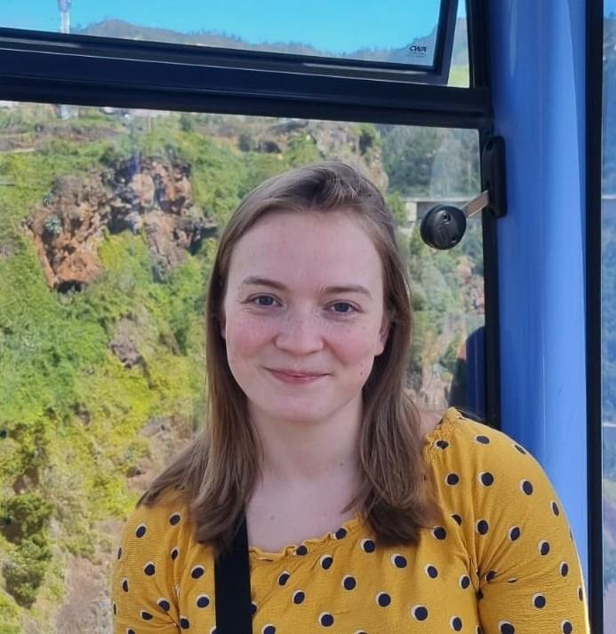


Nina van den Broek
Postdoc, RU/BSI
Social influence on eating behavior in youth
nina.vandenbroek@ru.nl
Postdoc, RU/BSI
Social influence on eating behavior in youth
nina.vandenbroek@ru.nl
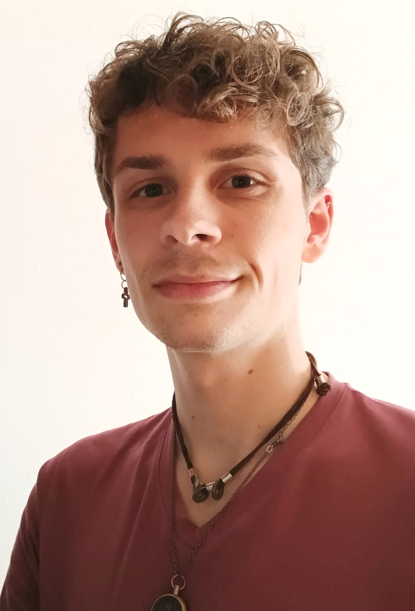
Marvin Dophemont
PhD candidate, RU/BSI/Pro Persona
Psychopathology and dynamical systems
m.dophemont@propersona.nl
PhD candidate, RU/BSI/Pro Persona
Psychopathology and dynamical systems
m.dophemont@propersona.nl
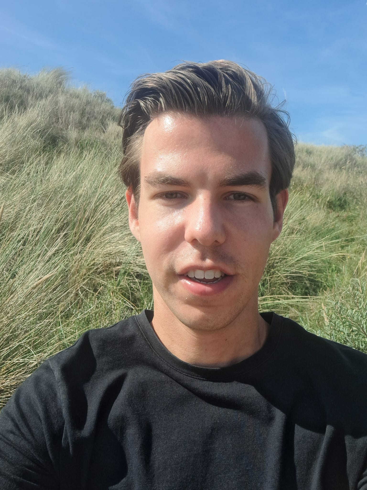
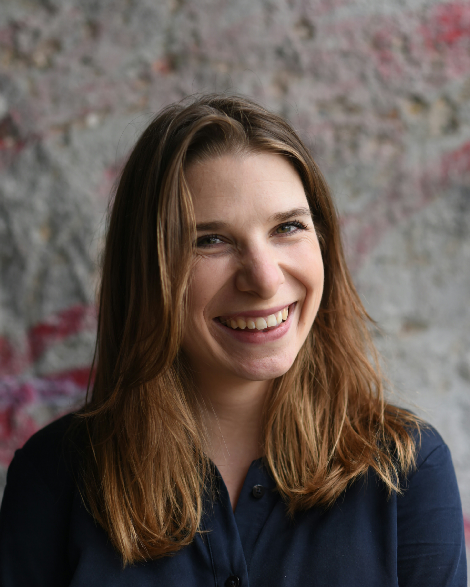
Anouk Vroegindeweij
Postdoc UMC Utrecht/Radboud University
Fatigue, loneliness, personalized interventions
anouk.vroegindeweij@ru.nl
Postdoc UMC Utrecht/Radboud University
Fatigue, loneliness, personalized interventions
anouk.vroegindeweij@ru.nl
Kirsten van Hooijdonk
Postdoc, RU/BSI
Youth, alcohol use and mental health
kirsten.vanhooijdonk@ru.nl
Postdoc, RU/BSI
Youth, alcohol use and mental health
kirsten.vanhooijdonk@ru.nl
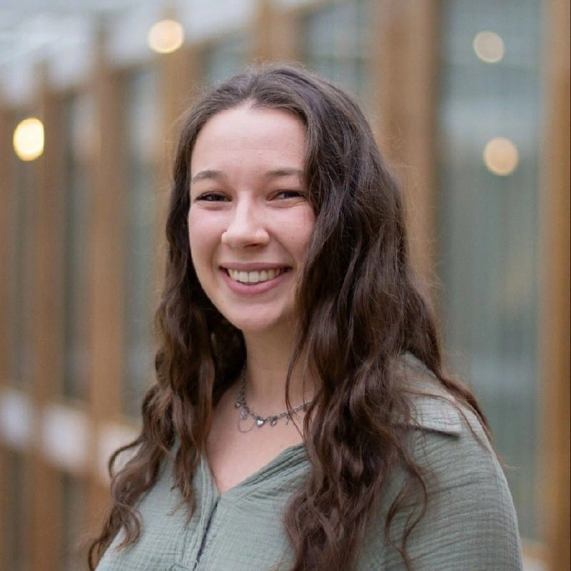
Colin Schoenaker
PhD student, RUMC
Biological and digital phenotyping (cognitive decline)
Colin.Schoenaker@radboudumc.nl
PhD student, RUMC
Biological and digital phenotyping (cognitive decline)
Colin.Schoenaker@radboudumc.nl

Giesje Nefs
Assistant Professor, RUMC
Human-technology interaction in health(care)
giesje.nefs@radboudumc.nl
Assistant Professor, RUMC
Human-technology interaction in health(care)
giesje.nefs@radboudumc.nl
Michele Schmitter
Postdoc RUMC/Donders and Pro Persona
Depression, exercise, and menstrual cycle
michele.schmitter@radboudumc.nl
Postdoc RUMC/Donders and Pro Persona
Depression, exercise, and menstrual cycle
michele.schmitter@radboudumc.nl
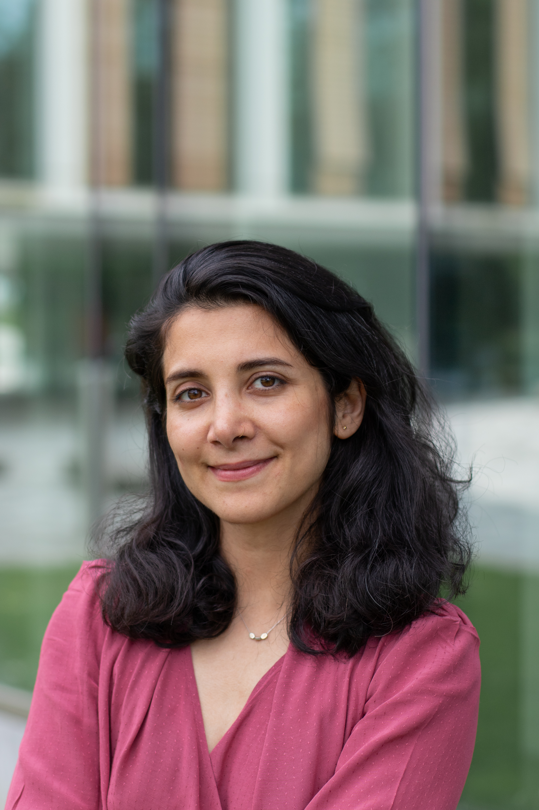
Farnaz Mosannenzadeh
Postdoc RU
Attachment, emotion regulation, romantic relationships
farnaz.mosannenzadeh@ru.nl
Postdoc RU
Attachment, emotion regulation, romantic relationships
farnaz.mosannenzadeh@ru.nl